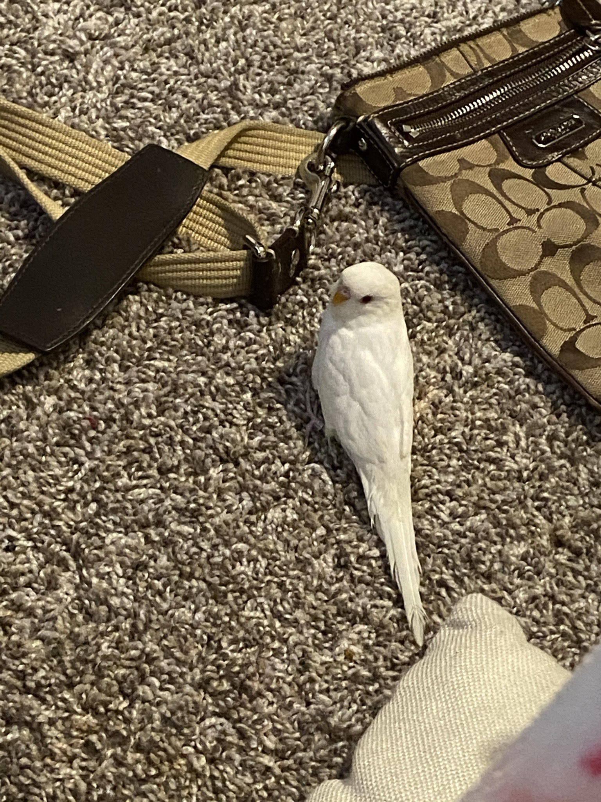
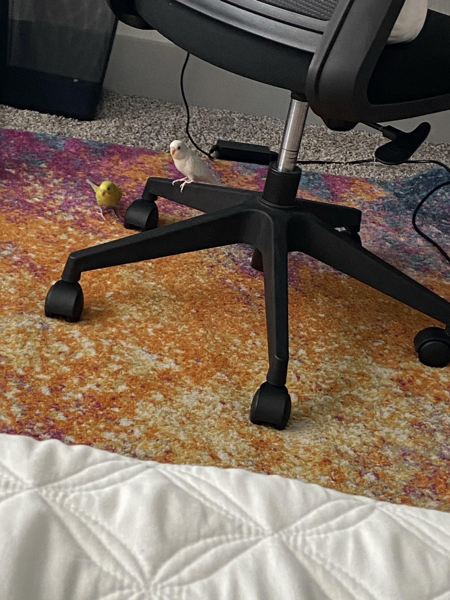

My name is Hannah, I am currently a senior at KFHS, and I like playing games, reading books, and drawing.
 As you can see, I have 2 budgies: the white one is named Mayo, and the yellow-green one is named Mustard. They're both boys, and I've had them since Feburary.
I've lived mainly in Houston, but I've also lived in other places such as Missouri, Florida, and New York when I was a kid. Currently, I am not in any clubs, but I intend to join Interact or Stuco.
In my free time, here are some of the things I like to do:
My (close) family is pretty small, I only have my mom, dad, and a little sister. Here is some information on my family:
In the future, I plan to either apply for college at Universiy of Texas or Texas A&M. I am going to college because it's something my parents want for me, to have a better chance at getting higher paying jobs. I don't know exactly what I job I want in the future, but I know it'll be something in technology. Although I'm not too sure about my life in the future, I know for sure that I want to get a cat.
Cell: 123-456-7891
Email: hcue1130@students.kleinisd.net